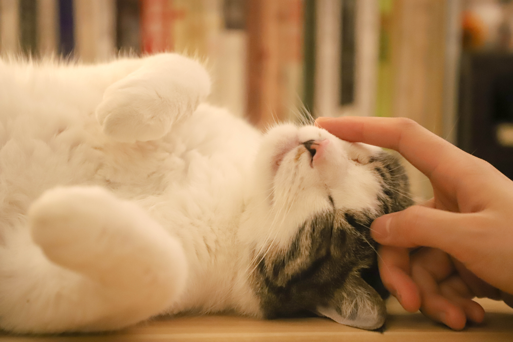

Bem vindo à Gatopédia!
Na Gatopédia você pode encontrar todo tipo de informação sobre
gatos! Veja abaixo nossa seleção e conheça mais sobre esses poços
de fofura

Na gatopédia você pode achar todo tipo de gatos!

Gatos carinhosos

Gatos dorminhocos

Gatos companheiros

Gatos brincalhões
Os gatos não têm nomes - respondeu.
Não? - perguntou Coraline.
Não - respondeu o gato. - Já vocês, pessoas, têm nomes. É por isso que não sabem quem são. Nós sabemos quem somos e por isso não precisamos de nomes.
Não? - perguntou Coraline.
Não - respondeu o gato. - Já vocês, pessoas, têm nomes. É por isso que não sabem quem são. Nós sabemos quem somos e por isso não precisamos de nomes.
Inscreva-se na Gatopédia!
Inscreva-se para saber tudo sobre nossos
bichanos preferidos!